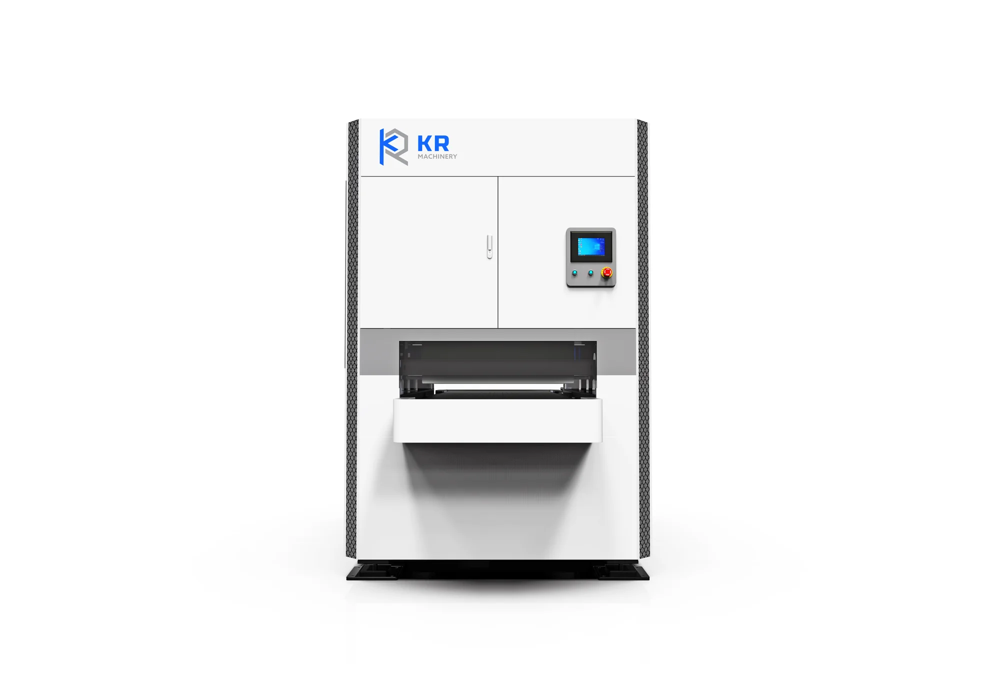
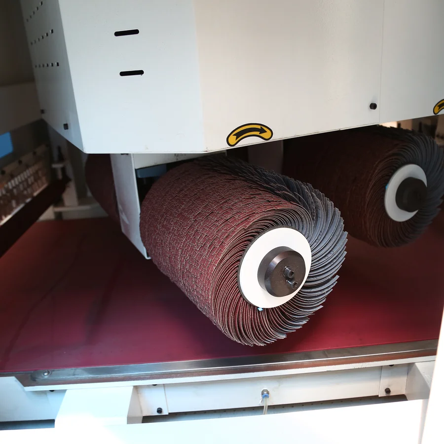
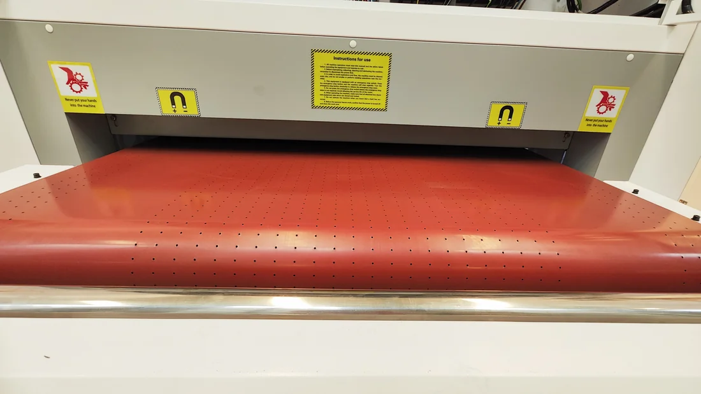
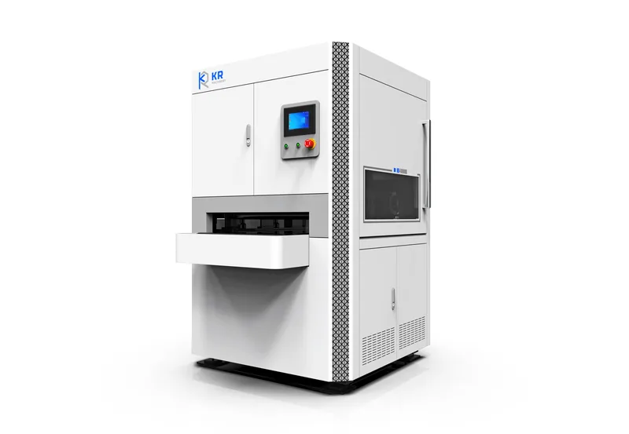
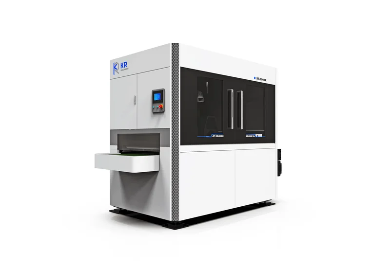

Dual-function sheet metal deburring and chamfering machine for laser & plasma cutting parts — uniform edge rounding and surface finishing in one pass.

| Technical Parameter | 800BR | 1000BR | 1300BR | 1600BR |
|---|---|---|---|---|
| Max. working width | 800 mm | 1000 mm | 1300 mm | 1600 mm |
| Workpiece thickness | 0.5–80 mm | 0.5–80 mm | 0.5–80 mm | 0.5–80 mm |
| Round corner | R0.1–0.5 | R0.1–0.5 | R0.1–0.5 | R0.1–0.5 |
| Feeding speed | 0.5–6 m/min | 0.5–6 m/min | 0.5–6 m/min | 0.5–6 m/min |
| Total power | ~30 kW | ~40 kW | ~54 kW | ~70 kW |
| Machine dimension (L×W×H) | ~2400 × 1700 × 2100 | ~2600 × 1900 × 2200 | 2900 × 2100 × 2300 mm | ~3100 × 2400 × 2400 |
| Net weight | ~3.5 tons | ~4.5 tons | ~5 tons | ~6 tons |
The BR series was born from a common fabrication pain point: laser-cut parts need both burr removal and edge rounding, but running them through two separate machines doubled handling time and floor space.
Belt removes burrs while rollers chamfer edges — two operations in a single feeding cycle, cutting handling time in half.
Standard vac-sorb table holds thin workpieces firmly during processing for consistent, warp-free results.
Exhaust fan and dust collector come standard, keeping the workshop clean and operators safe with ≥85% dust removal.
Choose BR for combined deburring + chamfering on thin and thick metal. Choose BB when you mainly remove large burrs from thick carbon steel.
Iron, stainless steel and aluminum, with workpiece thickness from 0.5 mm up to 80 mm.
Yes — minimum workpiece size is 50 × 50 mm, making it suitable for small precision components.
Typical lead time is within 15 workdays, depending on configuration and customization.
Every BR series machine integrates proven components that work together for stable, repeatable deburring and chamfering.

Industrial-grade brush rollers deliver uniform edge rounding and a fine surface finish on stainless steel, aluminum and copper. Quick-change design minimizes downtime.

Vacuum table with magnetic chuck holds thin workpieces firmly during processing for consistent, warp-free results — even on small and delicate parts.
Choose from multiple sanding-belt and roller configurations to handle different workpiece sizes and deburring requirements.
Compact configuration for small to medium parts. Single belt removes burrs, four rollers handle edge rounding.
Balanced setup with extended roller coverage. Ideal for medium-width workpieces and consistent chamfering.
Inline layout, not two-sided: the front sanding belt tackles heavy deburring first, the 4 brush rollers chamfer the edges in the middle, and the rear belt delivers a fine surface finish — all three stages happen on the same face of the workpiece in a single inline pass. Total: 2 belts + 4 rollers.

BB SERIESTwo belts remove big and small burrs from thick carbon steel cut by high-power laser or plasma machines.
View BB Series
R SERIESBrush rollers for chamfering and creating a beautiful surface on stainless steel, aluminum and copper.
View R Series